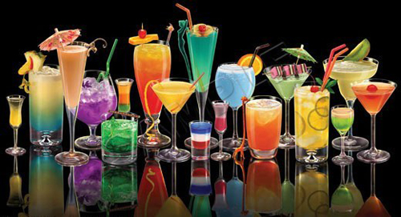

A refreshing drink typically served before a meal to stimulate the appetite. It typically includes gin, vermouth, or Campari and includes many of the oldest cocktails.
To request a brand name liquor when ordering a drink. These drink are typically more expensive than those using the house, or well, brand of liquor.
The smallest bar measurement tht specifies a quantity of liquid. Usually a simple shake of a liquid into the drink.
A drink, often sweet, served after dinner to complete a meal and aid digestion. They are typically dessert cocktails or any brandy.
Refers to the amount of vermouth in a cocktail, using less vermouth will result in a drier cocktail. Typically a martini is a drink that can be served dry.
An alcoholic beverage that has been flavored with fruit, herbs, nuts, spices, flowers, or cream and bottled with added sugar.
Drinks that contain no ice
Refers to serving a drink over ice. The term is often used when referring to a straight shot of liquor poured in a short glass filled with ice.
A drink whose ingredients are chilled in a cocktail shaker and strained into a glass.